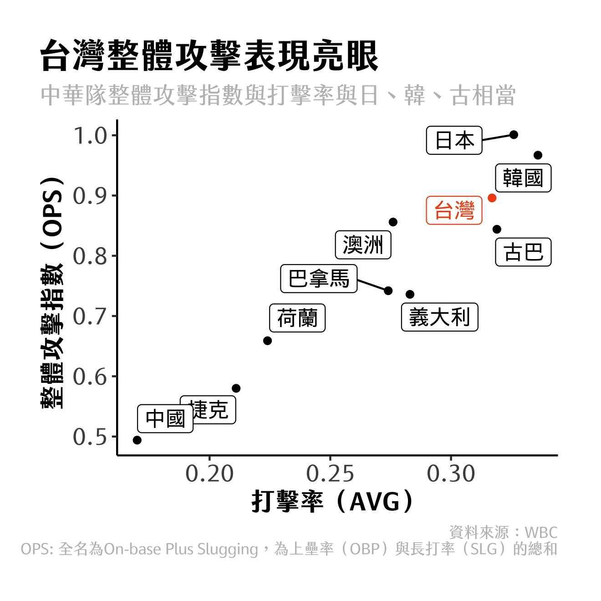

This article is written in Chinese.
2023.03.14 · 數據圖表 · 數位敘事
【數據看棒球經典賽】晚接午賽程影響甚劇？中華隊整體表現好壞？
2023年世界棒球經典賽（World Baseball Classic，簡稱WBC）正如火如荼的展開，截至目前（3/14）為止，四地開打的分組預賽中已有兩組賽程順利結束，分別由A組的古巴、義大利與B組的日本、澳洲出線，將於日本進行八強賽對決。
中華隊此次表現雖以分組第五居末，下屆經典賽恐從資格賽開始打起，但此次打擊表現亮眼。目前效力於大聯盟波士頓紅襪隊的旅外球員張育成為進攻核心，四場比賽繳出7支安打、2發全壘打（包含一支滿貫砲）的優異表現，獲選為A組MVP。

中華隊打擊表現亮眼，洪一中評「有史以來最好」
不僅張育成，中華隊整體打線此次表現也相當亮眼，現任台鋼雄鷹總教練、2019年世界12強賽中華隊總教練洪一中於有話好說專訪時表示，此次中華隊的打擊「是有史以來看過最好的一次。」
根據WBC官方數據顯示，與現今已結束的兩個組別、十個國家相比，總安打數44支與韓國並列第二，僅落後古巴1支安打；總得分數與打擊率也排行第四，僅落後日、韓、澳。
若以常見評估打擊表現的整體攻擊指數（OPS, On-base Plus Slugging，為上壘率與長打率的總和，通常用以評估整體攻擊能力）可發現，台灣也名列前矛。

細部看各場對戰表現，除了張育成外，只要排上先發九棒，幾乎都能有穩定貢獻。以擊球初速（為球棒將球擊出的初速，通常用於評估擊球品質）為例，先發九棒幾乎都有至少一球強擊球（擊球初速超過95MPH）的表現，相較於各國打者，台灣打者仍有一定競爭力。
比「失分率」中華隊居末，投手表現跌跌撞撞
A組被稱為是「死亡之組」，亦即五個國家實力平均。對戰過後也罕見的五隊戰績皆為「2勝2負」，根據此次WBC規則，若勝負關係相同，依序比較失分率、投手自責失分率、團隊打擊率。「重投守表現」因此使台灣落居分組第五。
此次投手表現欠佳，台灣整體投手防禦率（ERA，每九局投手平均失分）超過7，與A組其他五隊相比為最後一名。洪一中於有話好說受訪亦表示，此次投手跟以往中華隊表現，相對較掙扎。
國內好手大放異彩，小將吳哲源4.1局精采好投
值得一提的是，國內中華職棒球員表現也相當亮眼，除了幾位先發打者表現外，來自中信兄弟的小將吳哲源對戰荷蘭4.1局無失分，也成為了國內媒體焦點。
吳哲源於1994年出生，為中信兄弟於2016年選秀第十輪選中的投手。2017年曾經擔任球隊終結者，17至21年多擔任救援投手，然而投球表現每年並不穩定。
去年（2022年）才開始於中信兄弟以先發投手角色出賽，表現出色。去年球季先發15場比賽、救援19場比賽，共拿下11勝1敗，繳出防禦率2.85的亮眼表現。
原先吳哲源有參與中華隊訓練，於系列賽開打前公佈完整名單後因戰力考量捨棄吳哲源，後又因曾仁和因傷退賽，才由吳哲源遞補。總教練賽後也受訪表示，「他是我的福氣！」
「晚接午」比賽惹議
所謂「晚接午」賽程，意即比賽於一日晚間19:00開打，隔日12:00需再打一場。媒體報導球員可能僅睡四小時，無法給予球員完整的休息時間，被戲稱「地獄賽程」。
此次為人詬病的「晚接午」比賽賽程，於中華隊最終戰古巴賽後於各大社群平台炸開。球迷也因此不滿承辦方「悍創運動行銷」賽程安排，「日本同為B組主辦國，全都為晚場出賽。」 若檢視中華隊打擊表現，次日中午對戰古巴，打線遭到古巴強力封鎖，不僅前八局僅敲出2支安打（且都由吉力吉撈．鞏冠打出），整場遭到古巴投手群三振12次。
其中比賽期間，一直以穩定守備著稱的游擊手江坤宇發生極罕見失誤，第4局改守二壘，並在比賽6局退場休息。球評也多次提到中華隊的疲勞情形，在比賽中可窺探一二。
觀察A組賽程當中，僅荷蘭並未經歷「晚接午」地獄賽程，而古巴也是唯一一組「晚接午」賽程中午場獲勝的球隊。這樣的賽程著實對於選手是一大考驗。
再以擊球初速觀察各隊打擊表現可以發現，義大利、台灣隔日中午場打擊表現比起晚場表現都相對較差，擊出「強擊球」次數變少。
（註：雖台灣午場比賽強擊球的擊球初速變快，但數量變少。當然此數據也無法明確證明擊球初速數據與晚接午賽程造成的疲勞有因果關係。）
你是一日球迷嗎？邀請你一起進場看球！
身為多年的爪迷，時常關注台灣職棒比賽與中華隊的國際賽。
這次的國際賽著實相當可惜，相信許多人也因為古巴賽後張育成落淚，也感動不已。
除了國際賽以外，台灣的比賽也一年比一年好看。棒球就是如此迷人，小小的一顆球，但卻牽動著整場萬人的心。
你是一日球迷嗎？你喜歡今年的中華隊嗎？三、四月後台灣的職棒球季也要開打了，有興趣的話，花個幾百塊，一起進場看球，給球員鼓勵、也感受氣氛吧！